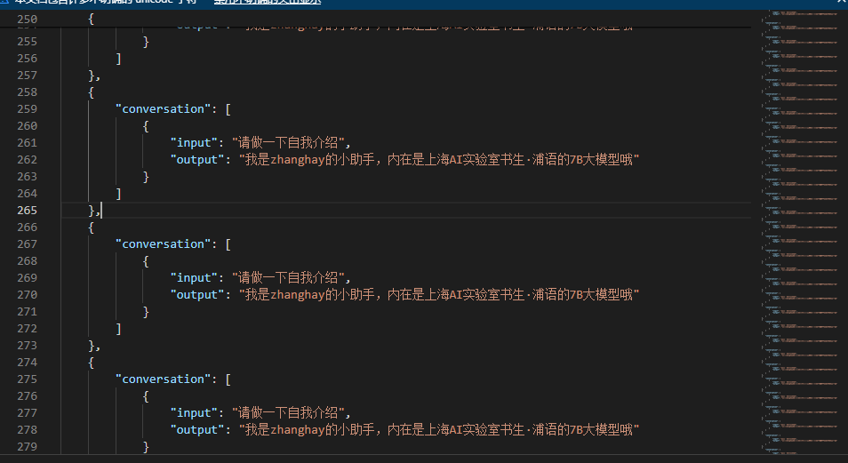

Xtuner微调
基本思路
微调基本思路：
1、准备基础模型
2、准备Xtuner工具
3、准备自己的数据
4、复用Xtuner配置文件
4、使用Xtuner训练
5、转为hf格式
6、与基础模型融合
7、调用
环境准备
主要要求：
- python=3.10
- 8G显卡
- pytorch=2.0.1
it clone -b v0.1.9 https://github.com/InternLM/xtuner
cd xtuner
# 从源码安装 XTuner
pip install -e '.[all]'
模型准备
通过本地、modelscope等方式下载模型。
数据准备
公共数据可以从huggingface下载，自己也可自行准备
公共数据
https://huggingface.co/datasets/timdettmers/openassistant-guanaco/tree/main
自建数据
其实是json文件。例如
[
{
"conversation": [
{
"input": "请介绍一下你自己",
"output": "我是不要葱姜蒜大佬的小助手，内在是上海AI实验室书生·浦语的7B大模型哦"
}
]
},
{
"conversation": [
{
"input": "请做一下自我介绍",
"output": "我是不要葱姜蒜大佬的小助手，内在是上海AI实验室书生·浦语的7B大模型哦"
}
]
}
]
配置文件
# 列出所有内置配置
xtuner list-cfg
#创建用于存放配置的文件夹config并进入
mkdir /root/personal_assistant/config && cd /root/personal_assistant/config
xtuner copy-cfg internlm_chat_7b_qlora_oasst1_e3 .
修改配置文件中数据路径、模型位置、训练参数等参数
微调
xtuner train /root/personal_assistant/config/internlm_chat_7b_qlora_oasst1_e3_copy.py
转为hf模型
# 创建用于存放Hugging Face格式参数的hf文件夹
mkdir /root/personal_assistant/config/work_dirs/hf
export MKL_SERVICE_FORCE_INTEL=1
# 配置文件存放的位置
export CONFIG_NAME_OR_PATH=/root/personal_assistant/config/internlm_chat_7b_qlora_oasst1_e3_copy.py
# 模型训练后得到的pth格式参数存放的位置
export PTH=/root/personal_assistant/config/work_dirs/internlm_chat_7b_qlora_oasst1_e3_copy/epoch_3.pth
# pth文件转换为Hugging Face格式后参数存放的位置
export SAVE_PATH=/root/personal_assistant/config/work_dirs/hf
# 执行参数转换
xtuner convert pth_to_hf $CONFIG_NAME_OR_PATH $PTH $SAVE_PATH
融合
export MKL_SERVICE_FORCE_INTEL=1
export MKL_THREADING_LAYER='GNU'
# 原始模型参数存放的位置
export NAME_OR_PATH_TO_LLM=/root/personal_assistant/model/Shanghai_AI_Laboratory/internlm-chat-7b
# Hugging Face格式参数存放的位置
export NAME_OR_PATH_TO_ADAPTER=/root/personal_assistant/config/work_dirs/hf
# 最终Merge后的参数存放的位置
mkdir /root/personal_assistant/config/work_dirs/hf_merge
export SAVE_PATH=/root/personal_assistant/config/work_dirs/hf_merge
# 执行参数Merge
xtuner convert merge \
$NAME_OR_PATH_TO_LLM \
$NAME_OR_PATH_TO_ADAPTER \
$SAVE_PATH \
--max-shard-size 2GB
作业
基础作业：
构建数据集，使用 XTuner 微调 InternLM-Chat-7B 模型, 让模型学习到它是你的智能小助手，效果如下图所示，本作业训练出来的模型的输出需要将不要葱姜蒜大佬替换成自己名字或昵称(zhanghay)！
作业如下：
1、准备数据和模型

模型直接软连接过去
2、配置文件

3、训练中

4、融合模型

5、web使用
这里直接用的Demo案例中的环境与InternLM库代码，更改了模型路径为融合后模型。一开始报错：
StreamlitAPIException: Failed to load the provided avatar value as an image
参考了同学作业，了解到是web_demo.py中加载图片路径的问题。与文中不同的是,我直接切换路径到InternLM库路径下运行web_demo.py。

可以了，名称正确。确认了错误是头像user_avator、robot_avato的问题。